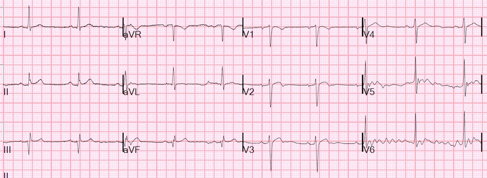
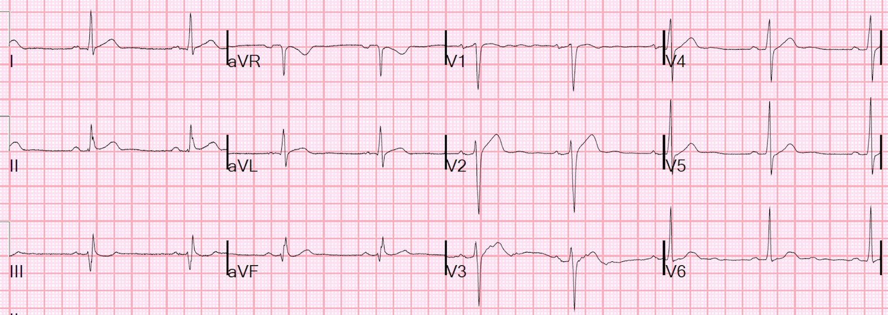
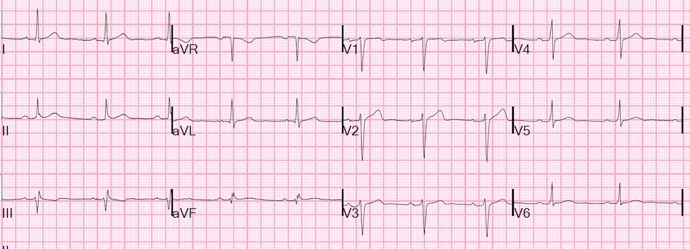
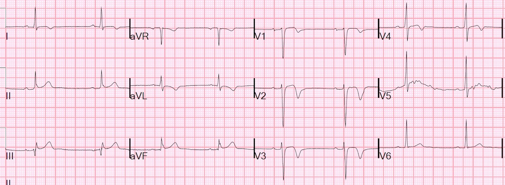
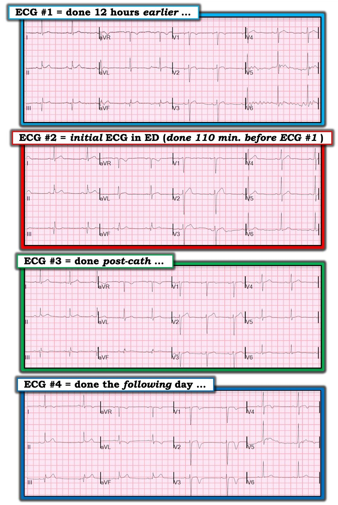

01/11/2019 — Bạn diễn giải điện tâm đồ này như thế nào?
Bản dịch tiếng Việt của bài "How do you interpret this ECG?" – Dr. Smith’s ECG Blog. Giữ nguyên toàn bộ 7 hình ảnh của bản gốc.
Vào cuối một ca trực tối, trong lúc công việc tạm lắng, tôi đang đọc lần lượt từng điện tâm đồ trong hàng đợi trên máy tính và thấy điện tâm đồ này, được ghi 12 giờ trước đó trong ngày:


Tôi tự nhủ:
“Hmmm, có sóng T đảo ngược phần cuối ở V2, và gợi ý có hình ảnh này ở V3. Nhưng khoảng QTc quá ngắn để là Wellens (377 ms theo máy tính, nhưng tôi đo được còn ngắn hơn),” nên tôi xác nhận kết quả đọc bằng máy tính là “bất thường ST-T không đặc hiệu,” rồi đọc tiếp. Tôi vẫn cho rằng, nếu chỉ xét riêng, điện tâm đồ này không có giá trị chẩn đoán.
Đã có một điện tâm đồ được ghi 110 phút trước đó, nhưng tôi không để ý và không xem nó. Đây là điện tâm đồ đó:


Diễn giải: ST chênh lên rất ít ở V2. Đoạn ST thẳng, điều này có thể rất đáng nghi ngờ nhồi máu cơ tim, nhưng ở đây tôi không thấy nó có ý nghĩa. aVL và III cũng đáng nghi ngờ, nhưng không có giá trị chẩn đoán.
QTc tính bằng máy tính là 394 ms. Nếu áp dụng công thức 4 biến, kết quả là 15,11, cực kỳ thấp. Với điểm cắt 17, công thức có độ nhạy > 95%.
Như vậy, mỗi điện tâm đồ, nếu xét riêng, đều âm tính.
Nhưng nếu bạn đặt chúng cạnh nhau, và trong bối cảnh lâm sàng phù hợp, giờ đây người ta sẽ rất nghi ngờ rằng điện tâm đồ được trình bày đầu tiên (ghi thứ 2) là Wellens, và điện tâm đồ được trình bày thứ 2 (ghi thứ 1) là tắc LAD.
Bệnh nhân quả thực đến viện vì đau ngực:
“Nam giới 30 mấy tuổi, đau ngực tăng dần trong 2 ngày, mô tả là cảm giác đè nặng. Bệnh nhân xác nhận có kèm khó thở (SOB) và đau lan xuống cánh tay trái. Đau tăng phần nào khi hít sâu nhưng không đau khi cử động hay khi ấn. Bệnh nhân phủ nhận tiền sử bệnh tim.”
Cơn đau của bệnh nhân lúc ghi điện tâm đồ thứ 2 đã hết (điều này phù hợp với hội chứng Wellens). Có vẻ như bác sĩ ở khu phân loại (triage) đã xem điện tâm đồ đầu tiên (không có giá trị chẩn đoán), và nhóm nhân viên y tế thứ 2 chỉ xem điện tâm đồ thứ 2, cũng không có giá trị chẩn đoán.
Trong ca này, 2 điện tâm đồ không có giá trị chẩn đoán hợp lại thành một cặp điện tâm đồ có giá trị chẩn đoán. Nhưng không ai xem cả hai cùng lúc!
Kết quả troponin I lần đầu tăng, ở mức 0,101 ng/mL. Cơn đau của bệnh nhân tái phát nên đã bắt đầu truyền nitroglycerin (NTG) liên tục. Giường bệnh có sẵn trước khi có ai biết cơn đau của bệnh nhân đã hết hay chưa. Và bệnh nhân được chuyển lên giường nội trú.
May mắn thay, khi bệnh nhân lên tới nơi, các bác sĩ trên khoa đã khám ngay và nhận ra bệnh nhân vẫn đau không kiểm soát được dù đang truyền NTG, nên họ đã kích hoạt phòng thông tim ngay lập tức.
Đây là kết quả chụp mạch vành:
Hẹp 90% dạng mờ (hazy) ở LAD đoạn gần, không cải thiện khi dùng NTG trong mạch vành liều 100 mcg, 200 mcg, 300 mcg – gợi ý nứt vỡ mảng xơ vữa/tổn thương thủ phạm
Nhận định và khuyến nghị:
Tổn thương thủ phạm gây NSTEMI là hẹp 90% do huyết khối ở LAD đoạn gần. Đã đặt stent.
Đây là điện tâm đồ sau thông tim:


Tôi nghi rằng chúng đã bị giả bình thường hóa TRƯỚC khi chụp mạch vành, lúc cơn đau tái phát, và đây là phần còn sót lại sau khi mở thông động mạch.
Thường phải mất nhiều giờ để sóng T tái tưới máu tiến triển sau tái tưới máu, hoặc (như trong ca này) để được thiết lập lại sau khi tái tưới máu lại (xem bên dưới).
Và sáng hôm sau:


Những điểm cần học:
1. Luôn xem tất cả các điện tâm đồ. Nếu xét riêng, chúng có thể trông gần như bình thường. Nhưng khi xem theo diễn tiến, chúng có thể có giá trị chẩn đoán
2. Luôn đánh giá đáp ứng với điều trị trước khi quyết định rằng bệnh nhân không cần vào phòng thông tim ngay lúc này.

===================================
BÌNH LUẬN CỦA TÔI, bởi KEN GRAUER, MD (1/11/2019):
===================================
Một ca tuyệt vời của Dr. Smith vì nhiều lý do. Từng đảm nhận vai trò “người đọc lại điện tâm đồ” (ECG Over-reader) cho tất cả bản ghi của bác sĩ nội trú và giảng viên trong Chương trình Đào tạo Nội trú Y học Gia đình của chúng tôi trong suốt 30 năm sự nghiệp y khoa hàn lâm — tôi hiểu rõ thách thức khi phải xem qua những chồng bản ghi không kèm bất kỳ bệnh sử nào đi cùng các điện tâm đồ được đặt trước mặt bạn.
- Câu hỏi luôn là KHI NÀO thì có những dấu hiệu trên điện tâm đồ mà có thể đã bị bỏ sót? — và những dấu hiệu nào có thể cần đối chiếu lâm sàng ngay lập tức để bảo đảm bệnh nhân được chăm sóc thích hợp?
- Rõ ràng — đơn giản là không có thời gian để tìm hiểu bệnh sử, và biết người điều trị đã làm gì cho từng bệnh nhân có điện tâm đồ nằm trong chồng bản ghi lớn trước mặt bạn. Vì vậy, người ta phải chọn lọc khi quyết định những ca nào cần theo đuổi. Bệnh cảnh lâm sàng trong bài viết này là một ví dụ xuất sắc và sâu sắc về các nguyên tắc đó.
Để cho rõ — tôi đã đánh số 4 bản ghi trong ca này theo thứ tự các điện tâm đồ được trình bày ở trên (Hình 1).
- Bình luận của tôi đưa ra một góc nhìn hơi khác …
- Theo ý kiến của tôi — quyết định cần đưa ra không phải là có kích hoạt phòng thông tim hay không. Thay vào đó, người ta cần quyết định có nên DỪNG việc đang làm để thu thập thêm thông tin lâm sàng trước khi chuyển sang bản ghi tiếp theo trong chồng hay không.


ĐIỆN TÂM ĐỒ #1 ( = điện tâm đồ thứ 1 chúng tôi được cho xem — nhưng thực ra là điện tâm đồ thứ 2 được ghi tại khoa cấp cứu trên bệnh nhân này). Vì điện tâm đồ #1 được đọc “nguội” (tức là chỉ biết rằng nó được ghi 12 giờ trước đó — nhưng không có được bất kỳ bệnh sử nào hay biết về các bản ghi khác của bệnh nhân này) — tôi sẽ bình luận bản ghi này từ góc nhìn đó.
- Nhịp trong điện tâm đồ #1 là nhịp chậm xoang ~58 lần/phút. Tất cả các khoảng đều bình thường. Trục mặt phẳng trán gần 0 độ. Không có lớn buồng tim.
- Về Thay đổi Q-R-S-T — dường như có sóng q rất nhỏ (có lẽ không có ý nghĩa) ở các chuyển đạo I, II và aVL. Điều quan trọng cần lưu ý là ở cả chuyển đạo III và aVF — đều có một sóng lệch ban đầu dương nhỏ (sóng r) — nên các chuyển đạo này biểu hiện hình dạng rSR’ (hay giống RBBB). Về tăng tiến sóng R — vùng chuyển tiếp hơi muộn (tức là sóng R không cao hơn độ sâu sóng S cho đến giữa V4 và V5).
- Hình dạng sóng ST-T thì đáng chú ý ở điện tâm đồ #1. Có ST chênh lên nhẹ nhưng thật sự ở từng chuyển đạo thành dưới (khi đánh giá so với đường nền đoạn PR). Ở chuyển đạo aVL — đoạn ST dẹt, với gợi ý sóng T đảo ngược nông ở một trong các phức bộ được ghi. Đoạn ST ở các chuyển đạo V1 đến V3 có dạng vòm, đặc biệt ở các chuyển đạo V2 và V3. Như Dr. Smith đã nêu — có gợi ý sóng T đảo ngược phần cuối ở V2 và V3. Nhiễu ở các chuyển đạo V5 và V6 khiến việc đánh giá sóng ST-T ở các chuyển đạo này trở nên vô dụng, ngoài việc nói rằng dường như không có thay đổi cấp.
- ĐIỂM THEN CHỐT (PEARL) #1 — Chuyển đạo III là một chuyển đạo bên phải. Do đó — đôi khi bạn có thể thấy hình ảnh rSR’ ở chuyển đạo III tương đương về mặt chức năng với hình ảnh rSR’ mà chúng ta quen thấy ở chuyển đạo V1 khi có RBBB hoàn toàn hoặc không hoàn toàn. Khi phức bộ QRS không rộng (như ở điện tâm đồ #1) — tôi coi hình ảnh rSR’ mà chúng ta thấy ở đây trong chuyển đạo III là một “tương đương RBBB không hoàn toàn” (điều này được củng cố ở điện tâm đồ #1 bằng dấu hiệu sóng s tận hẹp ở chuyển đạo I). Điều này có liên quan đến ca này — vì bình thường với các hình ảnh RBBB — sóng ST-T sẽ ngược hướng với sóng lệch cuối cùng của QRS ( = R’) ở chuyển đạo V1. Nhưng thay vì sóng ST-T chênh xuống ở các chuyển đạo III và aVF — lại có ST chênh lên nhẹ ở từng chuyển đạo thành dưới, và sóng T chắc chắn là dương.
- ĐIỀU CỐT LÕI về ĐIỆN TÂM ĐỒ #1: Đây không phải là một bản ghi bình thường. Như Dr. Smith đã nêu — ST dạng vòm ở các chuyển đạo V2 và V3, đặc biệt khi có gợi ý sóng T đảo ngược phần cuối — có thể phản ánh một biến cố cấp đang diễn ra (tức là thiếu máu cục bộ và/hoặc sự hình thành hình ảnh Wellens trên điện tâm đồ). Ngoài ra — sóng T dương ở các chuyển đạo III và aVF, đi kèm hình ảnh rSR’ ở các chuyển đạo này — cùng với ST chênh lên nhẹ nhưng thật sự (trong khi lẽ ra phải có ST-T chênh xuống ở các chuyển đạo này với hình ảnh IRBBB) có thể phản ánh một biến cố cấp đang diễn ra . Dù các dấu hiệu này kín đáo — trong bối cảnh khoa cấp cứu, tôi sẽ DỪNG LẠI sau khi xem điện tâm đồ #1 để tìm hiểu chuyện gì đang xảy ra với bệnh nhân này chỉ dựa trên riêng bản ghi này.
So sánh ĐIỆN TÂM ĐỒ #2 (ghi sớm hơn 110 phút, khi bệnh nhân mới đến khoa cấp cứu) — với điện tâm đồ #1:
- Như Dr. Smith đã nêu — MẤU CHỐT của ca này là sự thay đổi hình dạng sóng ST-T ở các chuyển đạo V2 và V3 giữa điện tâm đồ #1 và điện tâm đồ #2. Ở điện tâm đồ #2 lúc này có ST thẳng đuỗn kèm chênh lên nhẹ ở chuyển đạo V2 — không có gợi ý sóng T đảo ngược phần cuối. Ngoài ra — đoạn ST ở chuyển đạo aVL lúc này có dạng vòm (ở điện tâm đồ #1 thì không có dạng vòm) — và theo tôi thấy thì không có ST chênh lên ở các chuyển đạo III và aVF (trong khi ở điện tâm đồ #1 thì có).
2 bản ghi cuối cùng rất có giá trị gợi mở. ĐIỆN TÂM ĐỒ #3 — ghi sau khi đặt stent LAD đoạn gần “thủ phạm” — cho thấy diễn tiến thêm.
- Có vẻ như đã có tắc lại rồi tái tưới máu. Các sóng ST-T ở chuyển đạo trước tim, theo tôi thấy, trông giống như tôi dự đoán chúng sẽ trông trước biến cố cấp của bệnh nhân này. Đặc biệt lưu ý rằng đoạn ST ở chuyển đạo aVL của điện tâm đồ #3 không còn dạng vòm nữa — và sóng ST-T ở chuyển đạo III lúc này đã ngược hướng với sóng lệch cuối cùng của QRS ( = R’) ở chuyển đạo này.
- ĐIỆN TÂM ĐỒ #4, ghi vào ngày hôm sau — sau đó cho thấy diễn tiến sóng ST-T điển hình của sóng T tái tưới máu ở các chuyển đạo trước tim. Hãy chú ý cách chúng ta cũng thấy những thay đổi rõ rệt của sóng ST-T tái tưới máu ở các chuyển đạo chi của điện tâm đồ #4!
- ĐIỂM THEN CHỐT (PEARL) #2 — Tôi tin rằng diễn tiến của các thay đổi sóng ST-T mà chúng ta thấy lần lượt qua 4 bản ghi ở Hình 1 xác nhận điều tôi đã gợi ý ở ĐIỂM THEN CHỐT #1 — cụ thể là, ST chênh lên ban đầu ở chuyển đạo thành dưới với sóng T dương rõ ở các chuyển đạo III và aVF (vốn biểu hiện hình ảnh IRBBB) — thực sự là một manh mối kín đáo quan trọng bổ sung ở điện tâm đồ #1, cho thấy một quá trình cấp có thể đang diễn ra — và cần tìm cách đối chiếu lâm sàng ngay tại thời điểm này.
Chúng tôi xin CẢM ƠN Dr. Smith vì ca bệnh rất sâu sắc này!